3.4. Sampling#
Discrete and Quantized signals#
Discrete signals
A discrete signal has a value only at discrete values of the running variable (usually time). Formally the signal is then to be referred to as discrete-time signal. The interval between these discrete values of running variable is often uniform, e.g. \(\Delta t\). In between these values, the signal may be zero, undefined, or of no interest!
Note
Continuous-time signal is written as \(x(t)\). A discrete-time signal is usually written as \(x[n]\), or \(x_n\) (sequence \(x_0\), \(x_1\), \(x_2\)…)
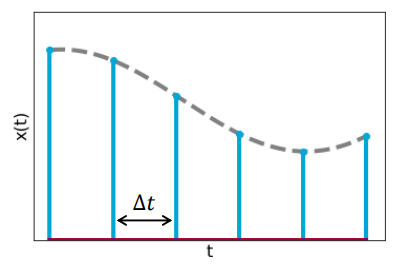
Continuous signals
A quantized signal may assume only countable number of values. Yet, changes from value to value may occur at any time. Think of describing an analog signal with 2 bits! The description of that signal can only have 4 possible values: 00, 01, 10 and 11, which represent the values 0, 1, 2 and 3 in the figure below.
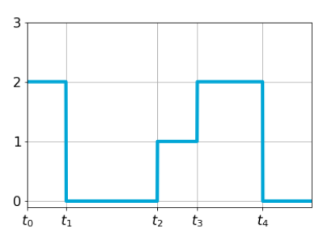
When we have more bits available, like 8, the signal description may have \(2^8=256\) possible values. Clearly, the number of available bits defines the resolution of the quantization.
Singularity function#
Unit impulse#
A very important function for sampling is the unit-impulse or Dirac-delta function:
and its graph looks like:
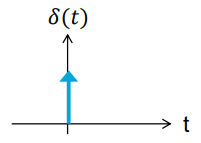
The area of the function equals 1, and this area is obtained in infinitesimal interval of time. We use this function to represent phenomena that occur in very short time intervals compared to resolution capability of measuring device, but which produce almost instantaneous change in measured quantity.
However, no conventional function exists with properties of the Dirac delta pulse. Let us define:
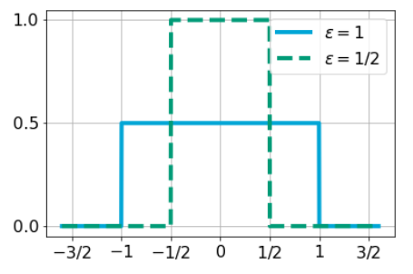
where \(\epsilon\to 0\) yields a unit impulse function.
Sifting property#
A very useful property of the Dirac delta function is the sifting property:
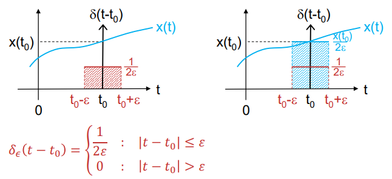
The conclusion is that this blue area equals \(x(t_0)\).
Analog-to-digital conversion#
Sampling can be modelled by multiplication of continuous-time signal \(x(t)\) with sampling function \(p(t)\).
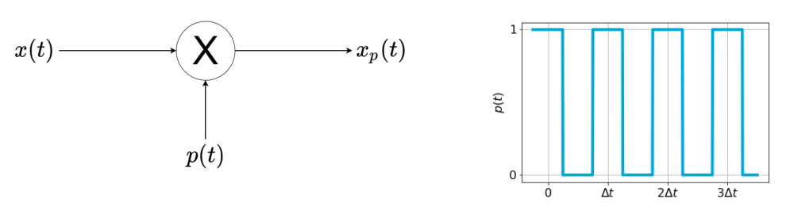
The sampled signal then becomes \(x_p(t)=x(t)p(t)\).
The sampling function, \(p(t)\), is assumed to be periodic pulse train with sampling period \(\Delta t\) (note that earlier, \(T\) or \(T_0\) denoted the period of a periodic signal).
In practice, time during which \(p(t)\) is non-zero (pulse width) is very small relative to period \(\Delta t\).
In fact, in digital systems, where sample is the number corresponding to the value of the signal \(x(t)\) at the sampling instant, \(t\), the pulse width of the sampling function is infinitelly small. Hence, we can model the sampling funtion as an impulse train
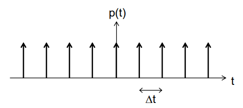
Fourier transform of sampled signal#
The impulse train \(p(t)=\sum_{n=-\infty}^{\infty}\delta(t-n\Delta t)\) is periodic (\(n\in\mathbb{Z}\)), with fundamental period \(\Delta t\), and can be written as Fourier series:
With fundamental frequency \(f_0=\frac{1}{\Delta t}=f_s\) (the sampling frequency), and Fourier coefficients \(P_k\) as:
using the sifting property, and considering only one impulse occuring in the integration interval (at \(t=0\)). The Fourier series of \(p(t)\) then becomes:
In the time domain, sampling is modelled as:
multiplied with \(\Delta t=\frac{1}{f_s}\) as a correction factor (to restore correct dimension; \(p(t)\) has dimension [1/s] and we want signal \(x_s(t)\) to have the same dimension as \(x(t)\) itself).
Now, what happens to the spectrum \(X(f)\) of signal \(x(t)\) when it gets impulse train-sampled? What is \(X_s(f)\) of \(x_s(t)\)?
MUDE Exam Information
This derivation is provided for additional insight and will not be part of the exam.
The Fourier transform of \(x_s(t)\) is:
Using the Fourier series of \(p(t)\):
Interchanging integration and summation:
Finally, the Fourier transform of the sampled signal becomes:
so, the spectrum of the sampled signal is the spectrum of the original signal, but repeated with “period” \(f_s\) (in the frequency domain); copies of spectrum are called aliases.
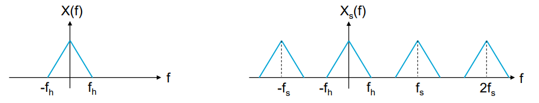 |
|---|
Spectrum of an assumed original signal \(x(t)\) (left) and that of its sampled equivalent (right) |
Sampling Theory#
In practice, we should choose a sample rate that is capable of representing the frequency components of a continuous signal as a discrete sequence. The term rate is quantified in units of samples per second, whereas a frequency component of the signal is described using cycles per second; both are represented by units of frequency, Hertz (Hz).
Consider a band-limited signal, \(x(t)\), which has no frequency components above \(f_h\) Hz. Such a signal can be completely specified by samples taken at a uniform sample rate greater than \(2f_h\) Hz.
Definition: Nyquist rate and Nyquist frequency.
If \(f_h\) is the maximum frequency of a band-limited signal, the quantity \(2f_h\) is called the Nyquist rate.
If the same signal is sampled at rate \(f_s\), the quantity \(f_s/2\) is called the Nyquist frequency.
Note that the Nyquist rate is related to the frequency of a signal, and the Nyquist frequency is related to the sampling. In other words, the Nyquist rate is characteristic of the signal, whereas the Nyquist frequency is characteristic of the sampling system!
In practice we consider only the domain \(-\frac{f_s}{2}<f<\frac{f_s}{2}\) of the spectrum obtained from the sampled signal.
Although many signals in practice are not band-limited, by considering the maximum frequency of interest for a particular application, the Nyquist rate can be applied to determine a suitable sampling strategy; specifically, to avoid aliasing.
Aliasing#
Note that in order to reconstruct original continuous-time signal from samples, it is crucial to sample the signal at a rate larger than Nyquist rate. When sampling is below this rate, the adjacent spectra (aliases) will overlap, and it will be impossible to reconstruct the signal from its samples. This phenomenon is called aliasing, and is illustrated in the following two examples.
Theoretical Example
As an example, we will study the effect of sampling a sinusoidal signal with frequency \(f_c=5\) Hz we have \(x(t)=6\cos(10\pi t)\)
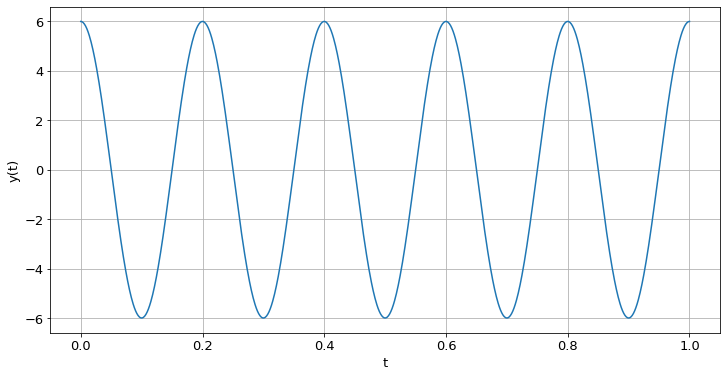
First, we look at the correctly sampled signal, with \(f_s=14\) Hz (\(f_s>2f_c\)). The spectrum (which is real, because \(x(t)\) is even) of original continuous-time signal will have two Dirac-functions with weight 3, at \(f=5\) Hz and \(f=-5\) Hz, i.e.
Sampled at 14 Hz, we find:
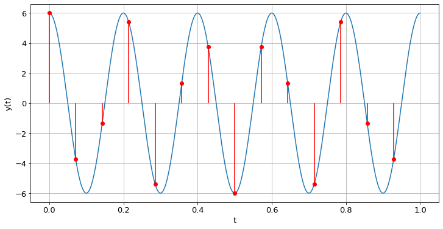
Spectrum
With \(x(t)=6\cos(10\pi t)\) and \(f_s=14\) Hz:
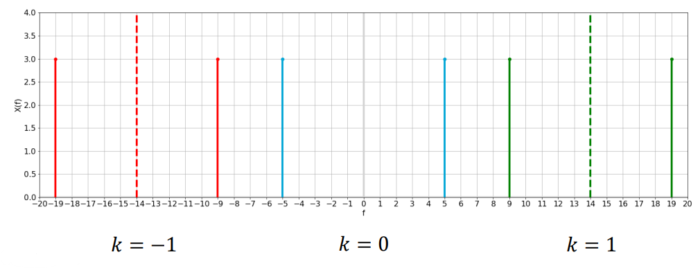
The dashed lines indicate integer multiples of the sampling frequency. As we are only considering the domain \(-\frac{f_s}{2}<f\leq\frac{f_s}{2}\):
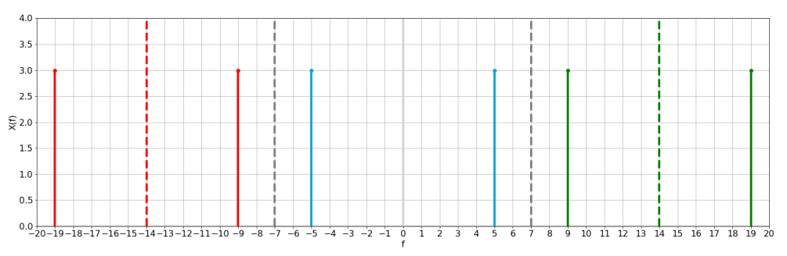
And we see that with this sampling we get a correct result (just the two original Dirac delta pulses in blue)!
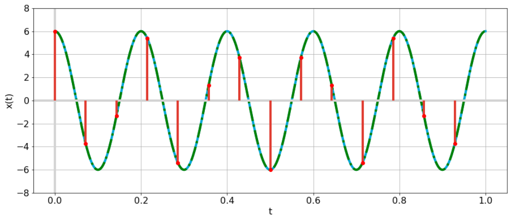
But what if we try to sample our signal using a sampling frequency of 7 Hz?
Well, with this we violate the sampling theorem, as \(f_s=7\) Hz and, therefore, \(f_s\ngeq 2f_c\). We find:
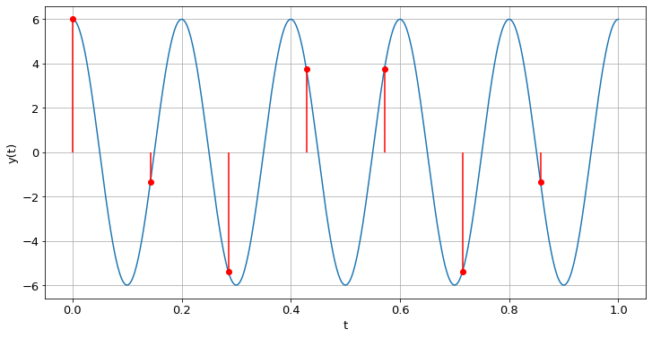
With this, we find the following spectrum:
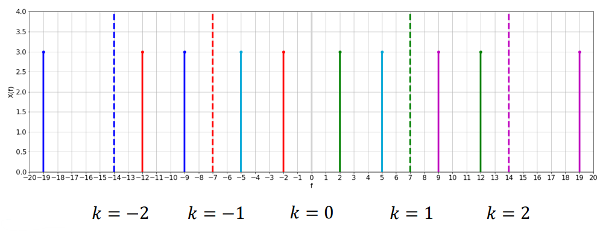
Once again, considering only the domain \(-\frac{f_s}{2}<f\leq\frac{f_s}{2}\) represented in grey, we find:
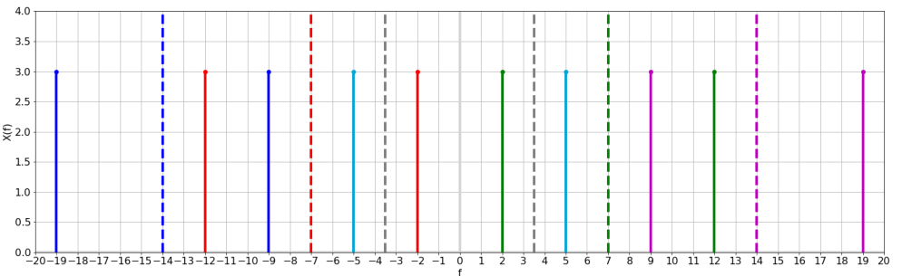
And we see we find an incorrect result, as the sampled and reconstructed signal (in dashed green) presents a lower frequency than the original signal (in blue) we encounter Dirac delta pulses in green and red at 2 Hz and -2 Hz:
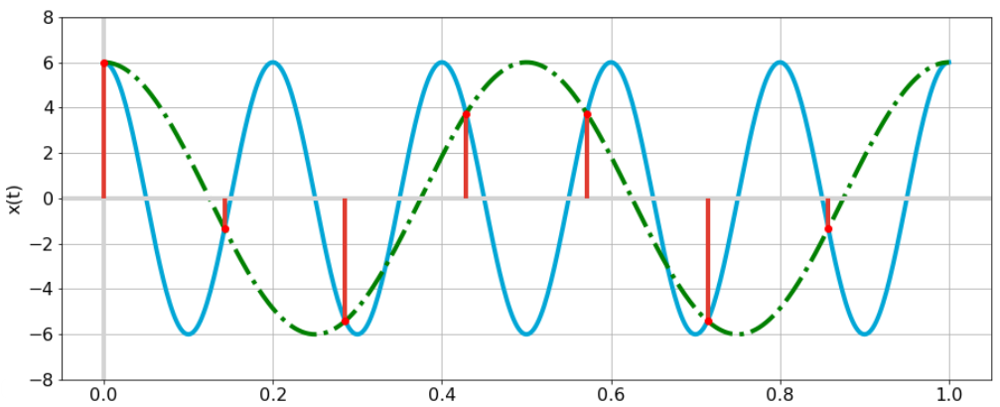
Example in Practice
The phenomenon illustrated in this video is known as the “wagon wheel effect,” and, more generally as the stroboscopic effect (and you can find loads of videos on it in addition to the one her). This phenomenon is a result of aliasing.
Suppose you have a wheel with, hypothetically, only one spoke connecting the rim to the axle. By watching the spoke we can tell whether, and how, the wheel is turning. If this wheel would be turning at a frequency of \(f_c\) = 1 cycle per second (Hz), and we would capture frames with a video camera at exactly \(f_s\) = 1 Hz (one frame per second), then we would see the spoke in exactly the same position in all frames recorded by the camera; hence, it looks like the wheel is standing still in our video! Of course in reality the wheel is turning. In this case the video, a series of images taken at discrete time instants, gives us a false impression about reality.
Connecting this to Nyquist sampling: the wheel rotation frequency is \(f_c\) = 1 Hz, and hence the Nyquist rate is 2 Hz, and our sampling frequency \(f_s\) = 1 Hz is clearly below it (we’re sampling too slowly). The spectrum (with frequencies \(f_c\) = -1 and +1 Hz) gets copied to integer multiples of the sampling frequency \(f_s\) (e.g. at 1 Hz), hence a copy of \(f_c\) = -1 Hz, shows up as an alias at \(f\) = 0 Hz.
The example in the video is slightly more involved as the wheel has 7 identical spokes, causing the frequency of interest (\(f_c\)) to be actually 7 times as large. We achieve an identically looking image already after 1/7th turn of the wheel.
In the video, at some point, the wheel is turning backward: not in reality, but in our observations based on the sampled signal. At this point we were driving slightly over 30 km/h, which is 8.9 m/s. With a wheel circumference of 1.92 m, the turning frequency is 4.6 Hz. With 7 identical spokes, the periodic signal has a frequency of 7 times 4.6 Hz, which yields \(f_c\) = 32.4 Hz. The camera on the smartphone captures the video at 30 frames per second (fps), hence \(f_s\) = 30 Hz. So, we can expect an alias of \(f_c\) at a frequency of -2.4 Hz (a negative frequency, materialized by the apparently a backward turning wheel).
Summary#
The Fourier transform of a sampled signal, \(x_s(t)\), is given as:
where \(f_s\) is the sampling frequency.
To prevent aliases, this frequency \(f_s\) should be larger than \(2f_h\), where \(f_h\) is the highest frequency occurring in the signal!
Exercises#
Given a signal \(x(t)\) that is sampled at frequency \(f_s\), what does \(X_s(f)\) look like? The following quiz questions will test your knowledge.